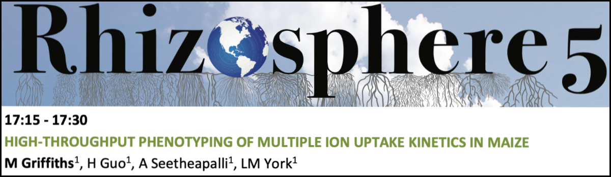

Presentations / Conferences
Where I've been
2020 Phenome2020, Arizona, US.
Phenotyping multiple ion uptake rates by roots across the diverse maize NAM population founders
Griffiths M, Guo H, Seethepalli A, Dhakal D, York LM.
Invited speaker

2020 Texas Women's University, Denton, TX, US. Griffiths M, Roy, S. Introduction to plant phenotyping - Biotechnology Undergraduate course. Guest lecturer
2019 Noble Seminar series, Noble Research Institute, OK, US. Griffiths M, Guo H, Seethepalli A, Dhakal D, York LM. RhizoFlux: Phenotyping of multiple ion uptake rates in NAM founder lines. Seminal speaker
2019 University of Nottingham, UK. Collaboration.
2019 Rhizosphere 5, Saskatoon, Ca. High-throughput phenotyping of multiple ion uptake kinetics in maize Invited Speaker 
2019 International Plant Phenotyping Root workshop IPPN. Noble Research Institute, OK, US. Softwares & tools for image-based root phenotyping Invited Speaker & Workshop Co-organiser Seedling hydroponics / Root respiration / Measuring nutrient uptake rates
2019 Phenome2019, Arizona, US. Griffiths M, Guo H, Seethepalli A, York LM. Developing a high-throughput phenotyping platform for multiple ion uptake kinetics. Poster
2018 Noble Seminar series, Noble Research Institute, OK, US. Griffiths M, Guo H, Seethepalli A, York LM. Developing a high-throughput phenotyping platform for multiple ion uptake kinetics. Seminal speaker
2018 NIEHS Postdoc Career Development Symposium, Research Triangle Park, North Carolina.
2017 SEB Gothenburg. Gothenburg, Swedish Exhibition & Congress Centre.
2016 4th International Plant Phenotyping IPPN Symposium. CIMMYT El BataÃÅn, MX. Griffiths M, Atkinson JA, Mooney SJ, Bennett MJ, Wells DM. Identifying wheat root traits and regulatory genes that control nitrogen uptake efficiency. Poster
2016 Tomography for Scientific Advancement Symposium. University of Bath, UK. Griffiths M, Atkinson JA, Mooney SJ, Bennett MJ, Wells DM. X-ray Computed Tomography for non-invasive visualisation of root system architecture and root growth in soil. Lightning talk & poster
2016 UK Plant Phenotyping Root Phenoptying Workshop. University of Nottingham, UK.
2014 Society for Experimental Biology Annual Main Meeting. University of Manchester, UK. Griffiths M, Atkinson JA, Mooney SJ, Bennett MJ, Wells DM. Identifying wheat root traits and regulatory genes for nitrogen uptake efficiency (NUpE). Lightning talk & poster
2014 Rhizosphere seminar speaker. University of Nottingham, UK. Griffiths M, Keating S, Thompson M, Johnson J, Kory J. FUTUREROOTS: Redesigned root system architecture for improved crop performance. Seminar speaker